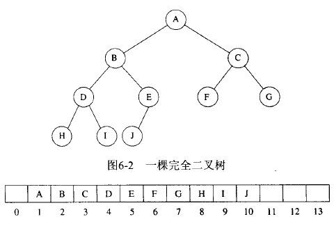
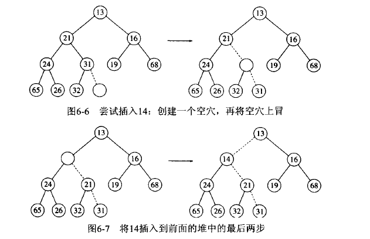
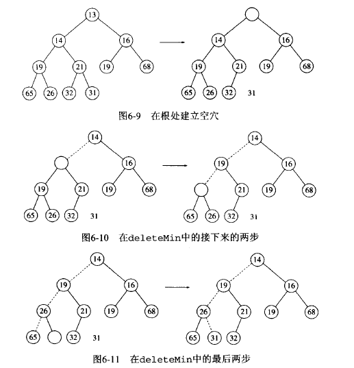
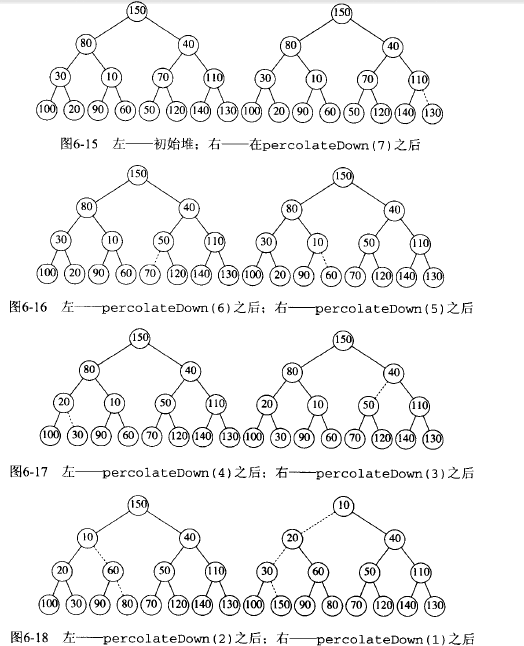

本文是优先队列即二叉堆（heap）的整理，包括：
- push
- pop
- 堆的创建及其他应用 ## 优先队列
在多任务环境中，操作系统必须决定在若干进程中运行哪个进程。我们知道，有一些任务应当具有优先权，对这些特殊的应用似乎需要一类特殊的队列，称之为优先队列(priority queue)。
优先队列至少应该实现insert和deleteMin操作。
一些简单的实现如下：
- 链表，插入队头O(1), 删除最小的元素则需要遍历链表O(n) 另一个方法是让链表保持在排序的状态，这使得插入代价O(n)，而deleteMin只需要O(1)
- BST：二叉查找树 对于两种操作平均时间都是O(logN)，但可能导致树的不平衡，用平衡树又显得过于麻烦
故优先队列使用二叉堆（binary heap）来实现。
二叉堆
如下图所示：
binary-heap
对于数组中任意位置i上的元素，左儿子在2i上，右儿子在2*i+1上，而父亲在i/2上。
对于堆，其最小元总在根上，并且任意的子树也应该是堆。（即任意结点应该小于它的后裔）
堆的基本操作
1.insert
为了插入一个元素，我们在下一个空闲位置创建一个空穴，并对其与父结点进行比较，进行上滤操作。
如图，插入14，将14与父结点31比较，小于父结点，故把父结点放入下面的位置，14不断的上移直到找到正确的位置。
binary-heap-insert
实现的代码如下，显然其复杂度为O(logN)
1
2
3
4
5
6
7
8
9
10
11
12
13
14
15
| struct Heap
{
int currentSize;
vector<int> array;
Heap() :currentSize(0), array(100){}
void insert(const int x)
{
if (currentSize == array.size() - 1)
array.resize(array.size() * 2);
int hole = ++currentSize;
for (; hole > 1 && x < array[hole >> 1] ;hole >>= 1)
array[hole] = array[hole >> 1];
array[hole] = x;
}
};
|
2.deleteMin
对于删除操作，把最后一个元素放在第一个位置，然后长度减一，相当于覆盖了原有的最小元素，然后对根结点进行下滤操作寻找合适的位置，来维护堆。如下图所示。
binary-heap-deleteMin
有一个陷阱是，将最后一个元素放在第一个位置后，原有的长度减少一，可能并没有右儿子结点。见上图的21.为此，我们需要进行判断。见下面的代码。
1
2
3
4
5
6
7
8
9
10
11
12
13
14
15
16
17
18
19
20
21
| void deleteMin()
{
array[1] = array[currentSize--];
percolateDown(1);
}
void percolateDown(int hole)
{
int child;
int x = array[hole];
while( (hole<<1) <= currentSize)
{
child = hole << 1;
if (child != currentSize && array[child] > array[child + 1])
child++;
if (array[child] >= x) break;
array[hole] = array[child];
hole = child;
}
array[hole] = x;
}
|
可以看出，删除操作的复杂度也为O(logN)
堆的其它操作
至于返回最小的（返回根array[1])和堆是否为空return currentSize ==0 我就不说了
1.decreaseKey(p,x)
该操作将减少p处元素的值。减少的幅度为x(x>0），这可能破坏堆的性质，因此需要进行上滤操作
2.increaseKey(p,x)
该操作将增加p处元素的值。增加的幅度为x(x>0），因此用下滤操作
3.remove(p)
该操作删除堆中位置p上的结点。首先执行decreaseKey(p,∞)，然后在执行deleteMin来完成
4.bulidHeap
对于一个堆，我们可以通过N次连续的insert来完成，需要O(NlogN)操作来完成.下面要讲的是O(N)的建堆方法。
将N项以任意顺序放入树中，然后对每个有儿子结点的进行下滤操作来维护堆。可以证明，其总的复杂度为O(N)
binary-heap-delete
1
2
3
4
5
6
7
8
9
10
11
| Heap(const vector<int> nums) :currentSize(nums.size()), array(nums.size()+10)
{
for (int i = 0; i < nums.size(); i++)
array[i + 1] = nums[i];
buildHeap();
}
void buildHeap()
{
for (int i = currentSize >> 1; i > 0; i--)
percolateDown(i);
}
|
5.最大堆
最大堆和最小堆只需要改变一下比较的函数即可。最好用c++的重载运算符。
C++重载运算符比如,用这个比较的话<则其实是返回>的结果，即使用之前的代码即可实现最大堆。
1
2
3
4
5
6
7
| struct data
{
int num;
bool operator < (const data& x) const{
return num > x.num;
}
};
|
下面是Poj的一道题的堆的解法。我并没有用重载运算符，所以都需要改运算符的符号<改大于啥的。
还有就是模仿STL的priority_queue，故insert和deleteMin操作对应的是push 和 pop
你可以自己实现一遍，加深理解。:)
http://poj.org/problem?id=1862
题解在我的CSDN http://blog.csdn.net/murmured/article/details/25476967
1
2
3
4
5
6
7
8
9
10
11
12
13
14
15
16
17
18
19
20
21
22
23
24
25
26
27
28
29
30
31
32
33
34
35
36
37
38
39
40
41
42
43
44
45
46
47
48
49
50
51
52
53
54
55
56
57
58
59
60
61
62
63
64
65
66
67
68
69
| #include<cstdio>
#include<cmath>
#include<queue>
using namespace std;
const int MAXN = 128;
struct Heap
{
int curSize;
double data[MAXN];
Heap(){curSize =0;}
void push(double x)
{
int hole = ++curSize;
for(;hole > 1 && data[hole>>1] < x ;hole>>=1)
data[hole] = data[hole>>1];
data[hole] = x;
}
void pop()
{
data[1] = data[curSize--];
matain(1);
}
void matain(int hole)
{
double x = data[hole];
for(int child;(hole<<1) <= curSize;hole=child)
{
child = hole << 1;
if(child!=curSize && data[child] < data[child+1])
child++;
if( x > data[child] ) break;
data[hole]=data[child];
}
data[hole] = x;
}
double top(){return data[1];}
bool empty(){return curSize == 0;}
};
int main()
{
int n;
while(~scanf("%d",&n))
{
Heap q;
for(int i=0;i<n;i++){
int x;
scanf("%d",&x);
q.push(x);
}
while(!q.empty())
{
double x1 = q.top();q.pop();
if(q.empty()){
printf("%.3lf\n",x1);
break;
}
double x2=q.top();q.pop();
q.push(sqrt(x2*x1)*2);
}
}
return 0;
}
|
参考资料